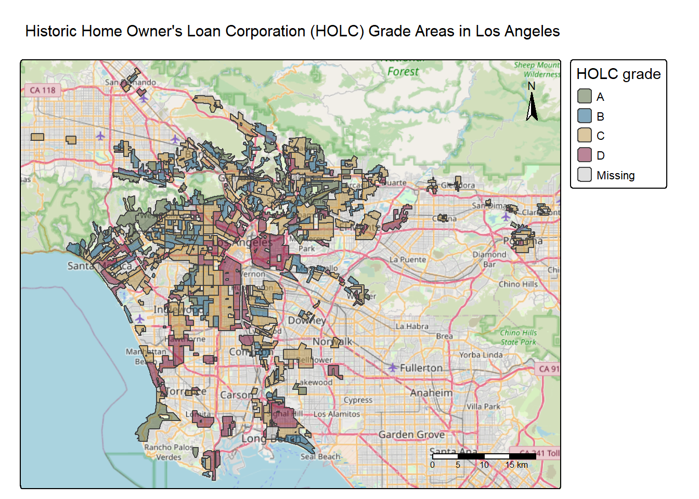
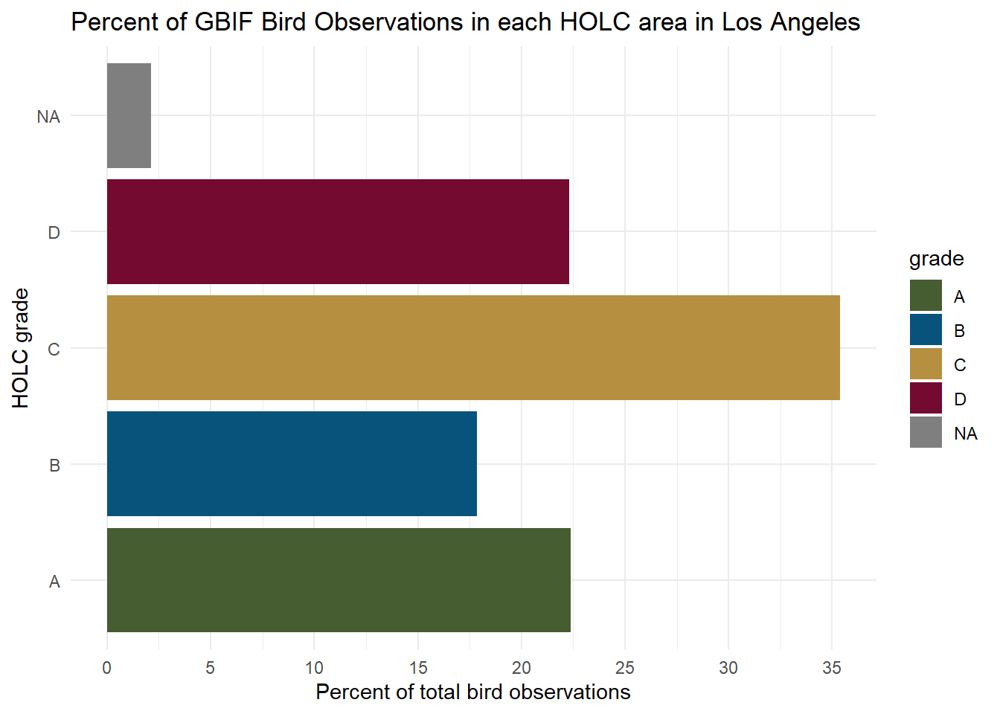

# Read in necessary libraries
library(tidyverse)
library(sf)
library(here)
library(tmap)
library(patchwork)EDS 223: Homework 2
Setup Code
- Loading necessary libraries
- Importing data
# Load in data
ejscreen <- read_sf(here::here("data", "ejscreen" , "EJSCREEN_2023_BG_StatePct_with_AS_CNMI_GU_VI.gdb"))
redline <- read_sf(here::here("data", "mapping-inequality", "mapping-inequality-los-angeles.json")) %>%
st_make_valid() # Validate polygons to eventually match to ejscreen
gbif <- read_sf(here::here("data", "gbif-birds-LA", "gbif-birds-LA.shp"))- Check the CRS each dataframe
if(st_crs(ejscreen) == st_crs(redline)){
print("ejscreen matches redline")
} else {
warning("CRS doesn't match")
}
if(st_crs(ejscreen) == st_crs(gbif)){
print("ejscreen matches gbif")
} else {
warning("CRS doesn't match")
}
if(st_crs(redline) == st_crs(gbif)){
print("redline matches gbif")
} else {
warning("CRS doesn't match")
}- Match ejscreen to gbif and redline so they can be joined by geometry
ejscreen <- st_transform(ejscreen, crs = st_crs(redline))Part 1: Legacy of redlining in current environmental (in)justice
Mapping Los Angeles County by Historic Home Owner’s Loan Corporation (HOLC) Grades
# Create map of LA by HOLC grade
tm_shape(redline) + # Use redline data
tm_polygons(
# Fill with polygons
fill.scale = tm_scale(values = c( # Set discrete color values
"#465C31",
"#07537C",
"#B68F40",
"#750A30"
)),
fill = 'grade',
# Fill by 'grade' column
fill.legend = tm_legend(title = "HOLC grade"),
# Add title
fill_alpha = 0.5 # Make basemap visible under fill layer
) +
tm_basemap("OpenStreetMap") + # Use streetmap data
tm_title("Historic Home Owner's Loan Corporation (HOLC) Grade Areas in Los Angeles") + # Set map title
tm_scalebar(text.size = 0.5) + # Set scalebar size
tm_compass(
type = ,
position = c("top", "right"),
# Put compass on top right corner
text.size = 0.7
) # Make compass larger
Join EJScreen and Redlining data from Los Angeles to analyze the percentage of census blocks that falls into each HOLC grade
# Make a table representing the percentage of census groups within each grade
# Subset EJScreen data to just LA county
la_subset <- ejscreen %>%
filter(CNTY_NAME %in% ("Los Angeles County"))
# Join datasets using geometries
redline_census <- st_join(redline, la_subset) %>%
st_drop_geometry()
# Find the number of census groups within each grade and divide by the total length of observations (x100) to find the penrcent of LA County observed in each grade
grade_census_percent <- redline_census %>%
group_by(grade) %>%
summarise(census_percent = (n() / length(redline_census$grade)) * 100) %>%
mutate(census_percent = round(census_percent, 1))
# Create a table of the amount of census blocks in each HOLC grade
knitr::kable(
grade_census_percent,
col.names = c("HOLC grade", "Percent"),
caption = "Percent of Los Angeles Census Blocks in each HOLC Grade",
align = "c"
)| HOLC grade | Percent |
|---|---|
| A | 7.0 |
| B | 19.4 |
| C | 47.9 |
| D | 21.1 |
| NA | 4.6 |
Visualize the mean of 3 parameters in LA by HOLC grade area
Create a subset of target variables
# subset for variables of interest and find the mean value of that column by grade
means_ejscreen <- redline_census %>%
janitor::clean_names() %>%
select(grade, lowincpct, pm25, lifeexppct) %>%
group_by(grade) %>%
summarise(
mean_low_inc = (mean(lowincpct) * 100),
mean_pm25 = mean(pm25),
mean_life = (mean(lifeexppct, na.rm = TRUE) * 100)
) Create visualizations
# Plot the avg percent of low income residents by grade
lowinc_plot <- ggplot(data = means_ejscreen,
aes(x = mean_low_inc, y = grade, fill = grade)) +
geom_col() +
scale_fill_manual(values = c("#465C31",
"#07537C",
"#B68F40",
"#750A30")) +
theme_minimal() +
theme(axis.text.y = element_blank(),
legend.position = "none") +
labs(title = "Low Income Residents in area",
x = "Average % of residents",
y = " ") +
scale_x_continuous(limits = c(0, 50),
expand = c(0, 0))
# Plot the mean percent of low life expectancy by grade
lifeexp_plot <- ggplot(data = means_ejscreen, aes(x = mean_life, y = grade, fill = grade)) +
geom_col() +
scale_fill_manual(values = c("#465C31",
"#07537C",
"#B68F40",
"#750A30")) +
theme_minimal() +
theme(axis.text.y = element_blank()) +
labs(
title = "Residents with Low Life Expectancy",
x = "Average % of residents in area",
y = "HOLC Grade",
color = "Grade"
) +
scale_x_continuous(limits = c(0, 50),
expand = c(0, 0))
# Plot the average risk indicator value for each grade
pm25_plot <- ggplot(data = means_ejscreen,
aes(x = mean_pm25, y = grade, fill = grade)) +
geom_col() +
scale_fill_manual(values = c("#465C31",
"#07537C",
"#B68F40",
"#750A30")) +
theme_minimal() +
theme(axis.text.y = element_blank(),
legend.position = "none") +
labs(title = "Particulate Matter Pollution Risk",
x = "Average risk indicator value of PM25 (>2.5 um)",
y = " ") +
scale_x_continuous(limits = c(0, 11),
expand = c(0, 0),
breaks = seq(from = 0,
to = 11,
by = 0.5))
# Combine plots using patchwork
lowinc_plot / lifeexp_plot / pm25_plot +
plot_annotation(title = "Evironmental and Health Disparities by HOLC Grade in Los Angeles")
Reflection: Part 1
The Historic Home Owner’s Land Corporation (HOLC) ratings of neighborhoods based on ‘safety for real estate investment’ were historically used to block access to home loans.
From the map of HOLC grade groups in Los Angeles, there is a visual impression of HOLC rated areas primarily in downtown Los Angeles and Santa Monica. There seems to be a larger amount of area in the C grade than anything else.
The table summary of the percentage of total census blocks falling within each HOLC grade confirms that almost half of Los Angeles census block groups fall within ‘C’. The next most represented grades are D, containing 21% of census blocks and B, with 19%.
Visualizing continuous data from EjScreen’s environmental justice mapping tool within redline grades, there is a pattern of redlined neighborhoods in Los Angeles experiencing the greatest disparity in health and environmental indicators.
Neighborhoods within D grade areas had the highest risk assessment values of all grades in this analysis. An average of nearly 40% of residents in ‘D’ areas are low income, and can be seen to have the greatest average percent of residents with low life expectancy. The PM25 indicator quantifies exposure risk to poor air quality. The indicator values range from 2.39033 to 12.1372, and can be interpreted using percentiles. If a neighborhood’s average value is above 8.2, that neighborhood would fall in the 50th percentile of risk.
In the plot showing air quality assessment, it can be observed that all grades have an average PM 2.5 risk indicator value greater than 8.2, which can be interpreted as all HOLC grade areas being above the 50th percentile for risk of poor air quality. Looking at the map, this is likely as the observed areas fall close to one another in a high traffic area.
Overall, the observed disparity in health and environmental indicators between ‘A’ rated areas and ‘D’ are likely due to historical processes of pricing disadvantaged groups out of ‘nice’ areas that are supported by better infrastructure and development, and into areas with less desireable attributes. A multi-generational gap in quality of life has likely resulted in a feedback loop of hardship in these areas.
Part 2: Bird observation data within redline areas
- Find the percentage of bird observations within each HOLC grade
# Join HOLC data with gbif bird observations
bird_holc <- st_join(redline, gbif)
# Summarize percent of bird observations (sum by holc grade)
bird_obs <- bird_holc %>%
group_by(grade) %>%
summarise(percent_observed = (n() / length(bird_holc$grade))*100)- Visualize results
# Plot bird observation data percent by HOLC grade
ggplot(data = bird_obs, aes(x = percent_observed, y = grade, fill = grade)) +
geom_col() +
scale_fill_manual(values = c("#465C31", "#07537C", "#B68F40", "#750A30")) +
theme_minimal() +
labs(
title = "Percent of GBIF Bird Observations in each HOLC area in Los Angeles",
x = "Percent of total bird observations",
y = "HOLC grade",
color = "Grade"
) +
scale_x_continuous(
breaks = seq(from = 0, to = 40, by = 5)
)
Reflection: Part 2
From these results, we can say that that the greatest percent of all GBIF bird observations within Los Angeles HOLC grade areas were in ‘C’, at over 35%, with D and A having similar amounts around 22%. This is a likely outcome due to our findings from the percent of census blocks that fall within each grade. There are more observations of census data within C grades, which seems to correlate with land area on the map. Within our areas of interest from HOLC areas, it’s likely that there are more bird observations within ‘C’ because it simply has the most area between groups, so more birds were observed within a larger area.
However, a similar analysis by Ellis-Soto et al. 2023 yielded results that said there were significantly higher bird densities is ‘desirable’ (historically white) neighborhoods. The reason for this difference is probably due to Ellis-Soto et al. incorporating differences in vegetation, open space, population density, and climate in their analyses. The above analyses represent raw observation count, but do not factor in other spatial variables that might suggest a more diverse/ abundant total bird population.